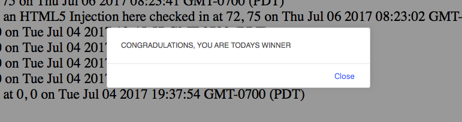
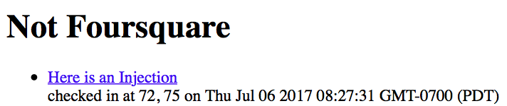
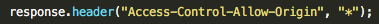
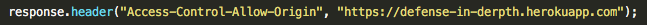

Security Assessment of Not Foursquare
Written by Jordan Stone Secuirty Services
Introduction
This webpage contains a security report that exposes vulnerabilities of the supplied webserver. This assignment was contracted to Jordan Stone Security Services by the Tufts CS Department. I have demonstrated my understanding of web based programming in this security profile. This web application logs “check-in” data from users. However, due to three security problems, it is not safe for the public.
Methodology
Testing of this application was split into two categories. Initially, black-box testing was conducted for finding vulnerabilities via curl. Then, after looking at the source code, curl was used again to perform injections and investigate more vulnerabilities within the source.
Abstract of Findings
Not Foursquare has web programming vulnerabilities that include placing too much trust into user input. This security problem can be simplified to saying that the web application does not properly scan the external input for malicious content. An attacker can submit malicious software that is masquerading as a normal input string, change the look and feel of the website or inundate the server with requests and overload the page. The security of the application can be bolstered with simple changes to the source.
Issues Found
-
XSS Vulnerabilities in login
- Location: /sendLocation
- Severity: High, Cross-Site Scripting vulnerabilities are a major security risk and puts Not Foursquare's user information at a level of vulnerability that is unsafe for a web application.
- Description: Not Foursquare currently trusts that the users will not put malware in their login data. The basic skeleton of the source will simple take the user input and place it into an html body. If the user inters a string with java script tags, the code inside these tags will be executed.
- Proof of Vulnerability: An initial issue with Not Foursquare, as mentioned above, is that, as a web application, NF places too much trust in its users input. For example, when a user creates a basic data entry, it might look something like this:
curl --data "login=Jordan&lat=72&lng=75" http://localhost:3000/sendLocation
The problem comes from the fact that Not Foursquare does not screen their user external input for malicious content. Therefore, in the section of the above text where the string
Jordan, 72, or 75
was placed, a devious user could insert input containing JavaScript that would allow the attacker access user information. For example, an attacker could create something like a popup window, , or more serious invasions such ass user data:
curl --data"login=<script>alert(document.cookies)</script>&lat=72&lng=75"http://localhost:3000/sendLocation
curl --data"login=<script>alert("I have access to your cookies Muahahaha")</script>&lat=72&lng=75"http://localhost:3000/sendLocation
XSS vulnerabilities are very dangerous because they leave open doors to the JavaScript source of the page and user information and data such as IPs and cookies.
- Resolution: Not Foursquare would have to implement a external user input filter on data that is being inputted into the source files. Such a filter would remove any characters that are key characters to malicious content such ass tag characters and slashes. Removing these characters will ensure that the input does not allow users to alter with the JavaScript of the web app. This will allow the server to seep out malicious characters from entering the database and causing any harm. The following code is one of many ways to filter out possibly malicious characters.
login = login.replace(/</g, "&lt;").replace(/>/g, "&gt;");
-
HTML Injection Vulnerabilities
- Location: /sendLocation
- Severity: High, HTML Injection Vulnerability is a major security risk and puts Not Foursquare's pages, layout, and look and feel at a level of vulnerability that is unsafe for a public web application.
- Description: Not Foursquare currently trusts that the users will not put malware in their login data. The basic skeleton of the source will simple take the user input and place it into an html body. If the user inters a string with html5 tags, the code inside these tags will be executed. Although this vulnerability runs less of a risk towards the database of Not Foursquare, it is still an issue this web application should fix if it wishes to have total control over its web appearance.
- Proof of Vulnerability: An initial issue with Not Foursquare, as mentioned above, is that, as a web application, Not Foursquare places too much trust in its users input. Example of injection:
curl --data "login=<header><a href="http://www.wikihow.com/Know-if-You%27ve-Been-Hacked">Here is an Injection</a></header>&lat=72&lng=75" http://localhost:3000/sendLocation

The problem comes from the fact that Not Foursquare does not screen their user external input for malicious content, containing html5 injections.
Injection vulnerabilities are dangerous because they leave open doors to the HTML source of the page.
- Resolution: Not Foursquare can fix their Injection vulnerabilities the same way as XSS vulnerabilities by screening input. Ensuring that key HTML injection characters are forbidden in user input strings will prevent these issues. The following code is one of many ways to filter out possibly malicious characters.
login = login.replace(/</g, "&lt;").replace(/>/g, "&gt;");
-
Wildcard CORS Vulnerabilities
- Location: /sendLocation
- Severity: High, A CORS vulnerability is a major security risk and puts Not Foursquare data at a level of vulnerability that is unsafe for a public web application.
- Description: By having their
Access-Control-Allow-Origin set to *, Not Foursquare will let anyone make a request for data without a question. This is not safe as it will make their users data vulnerable to attackers.
- Proof of Vulnerability:

- Resolution: Not Foursquare can fix their CORS vulnerabilities by only allowing access rights to trusted sites. In this case the only site necessary will be https://defense-in-derpth.herokuapp.com.

Conclusion
As shown above the significance of these security vulnerabilities are rather easily fixable and can prevent major security breaches to Not Foursquare. These solutions clean input data bases and sanitize user input from clients to make sure one cannot introduce malicious code. Additionally,, these changes make sure that other entities cannot access the information stored in Not Foursquare's server.